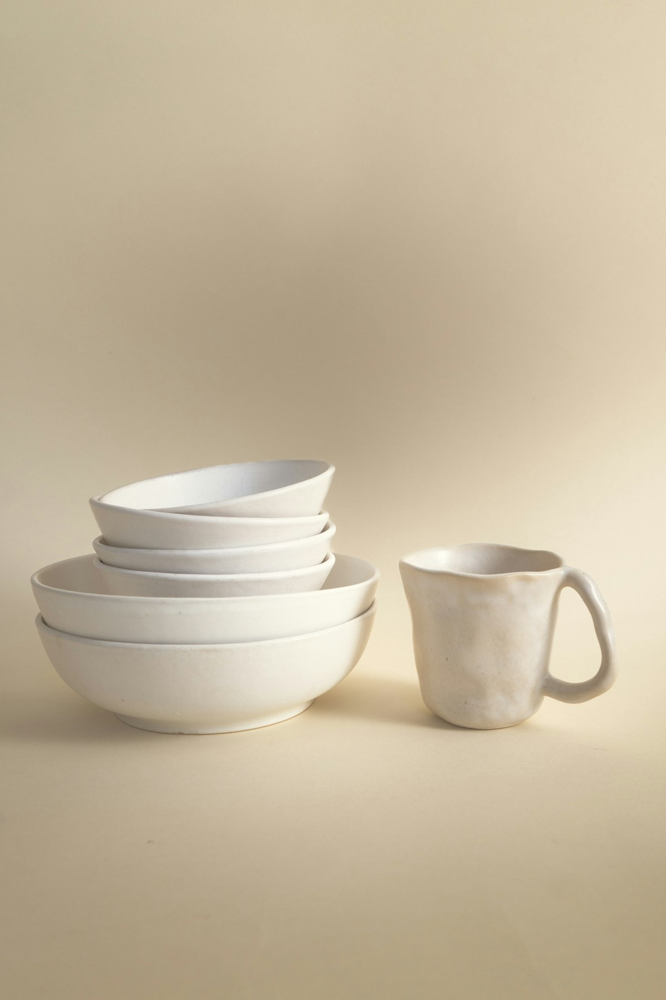
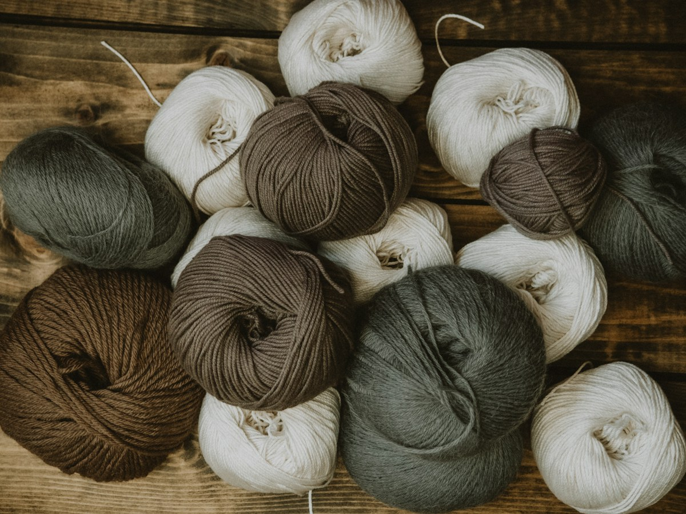

IMAGE / CERAMICS01 / MAIN CATEGORY
陶磁器
食器や暮らしの中で使われる陶磁器を、重点分野として取り扱っています。
CJT株式会社は、東京都墨田区を拠点に、中国向けの日用品輸出を行う貿易会社です。陶磁器と毛糸を重点分野とし、電子製品や衣料品なども取り扱っています。
会社概要を見る02 PRODUCTS
暮らしのさまざまな場面で使われる商品を取り扱っています。

IMAGE / CERAMICS食器や暮らしの中で使われる陶磁器を、重点分野として取り扱っています。

IMAGE / YARN手芸やものづくりに使われる毛糸を、重点分野として取り扱っています。
電子製品 衣料品 その他の日用品
日本から中国へ。
日々の暮らしに使われるものを。
03 COMPANY
CJT株式会社について
04 CONTACT
お問い合わせはメールにて承っております。